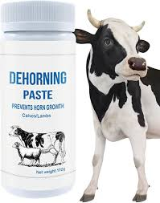
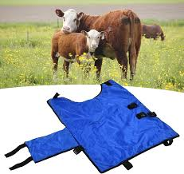
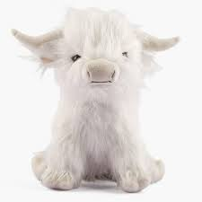
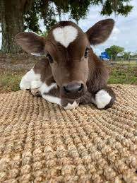

Razas de Vacas
Conoce algunas de las razas más conocidas y apreciadas:
- Holstein
- Jersey
- Angus
- Brahman
- Hereford
Productos con vacas
Encuentra productos útiles y vacunas.
Decoración vaquera
Ideas para decorar tu casa con estilo de granja y vacas adorables.
Juguetes de vacas
Juguetes suaves y seguros para niños que aman las vacas.
Curiosidades de vacas
¿Sabías que las vacas tienen mejores amigas y pueden recordarte por años? Aquí más datos interesantes.
